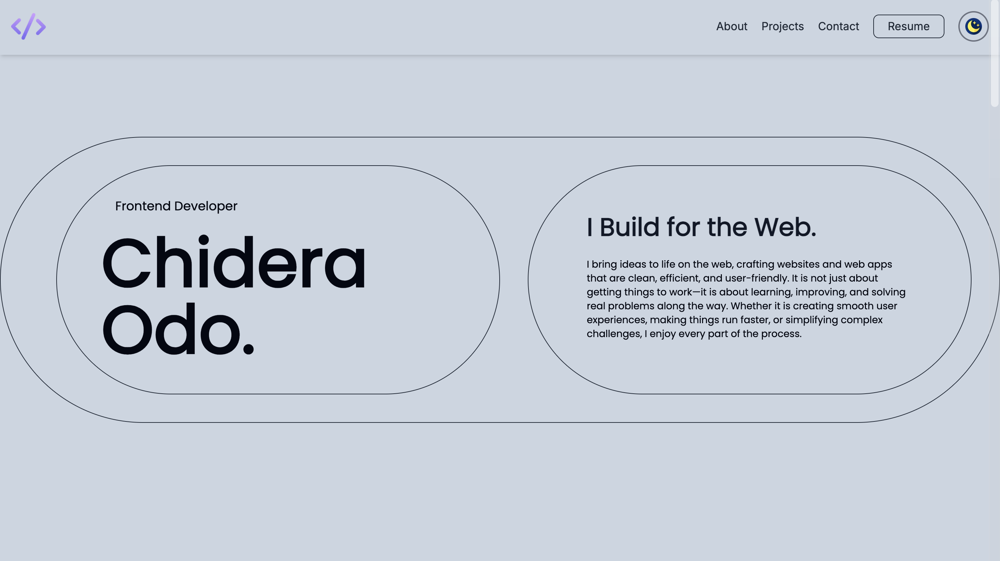
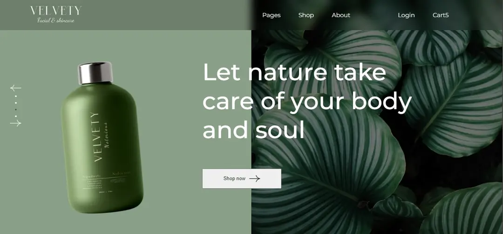
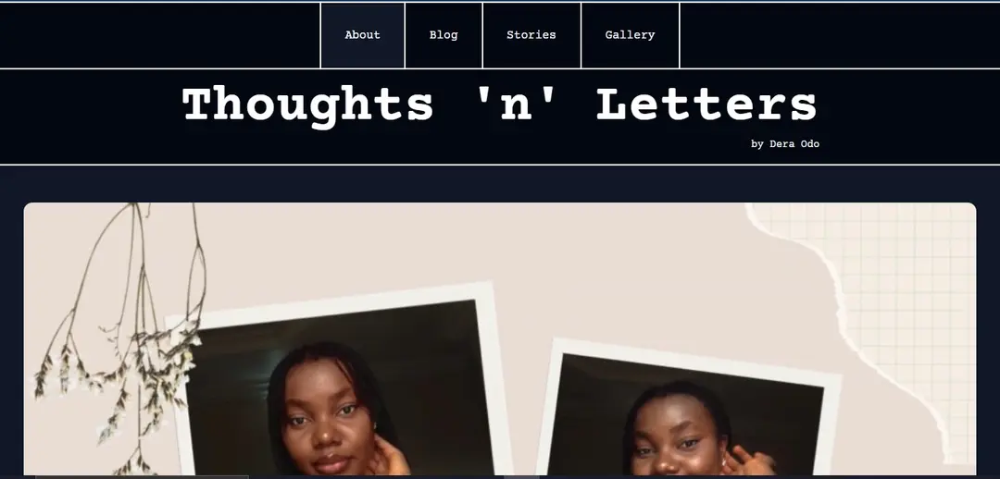
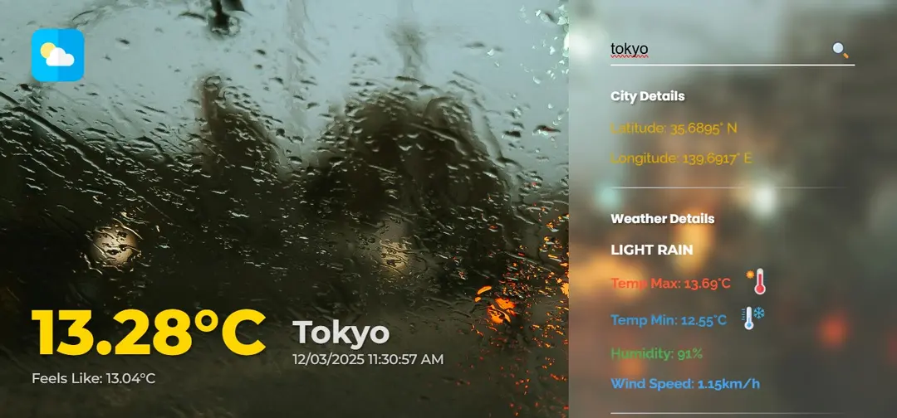

Personal Portfolio Site
A portfolio website showcasing my projects, tech stack and skills
- Next.js
- Tailwind CSS
Things I've built while learning frontend development, from a plain HTML, CSS and JavaScript portfolio to apps using Next.js, Sanity and live weather data.

A portfolio website showcasing my projects, tech stack and skills

Velvety is a skincare e-commerce website for ordering nature-inspired skincare products. It features Redux Toolkit Query for efficient state management and fetches product data from a local db.json file. The site also includes an automatic carousel and category-based product filtering for a seamless shopping experience.

ThoughtsNLetters is a Next.js and Sanity-powered lifestyle blog, designed for sharing personal reflections, experiences, and insights. Built with Tailwind CSS, it offers a clean, modern, and responsive reading experience.

HowsTheWeather is a weather web app built with HTML, CSS, and JavaScript, using the OpenWeatherMap API to fetch real-time weather data for any location. It features dynamic background images, manually sourced from Pexels, which change based on the current weather conditions for a more immersive experience.